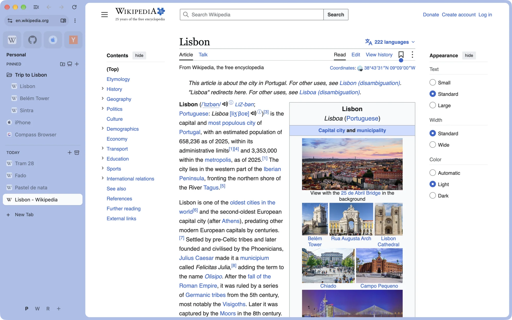
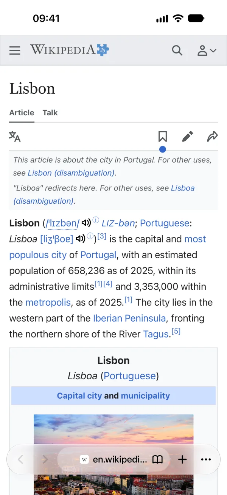
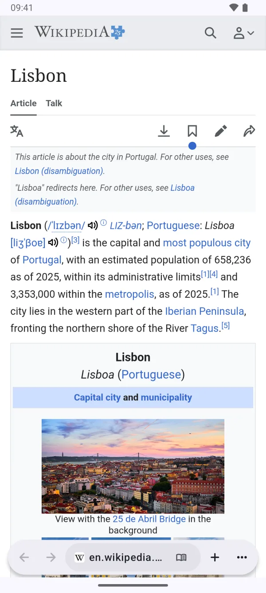
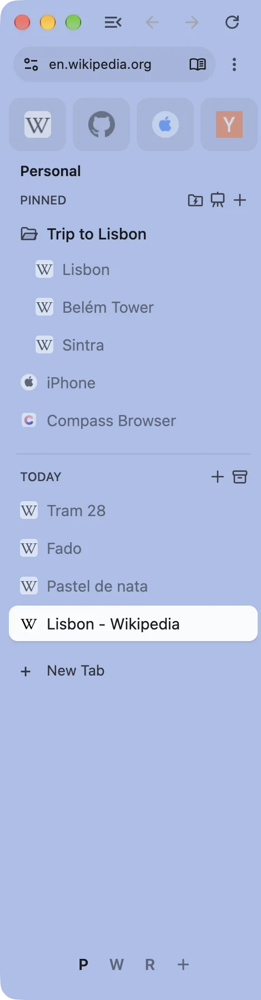
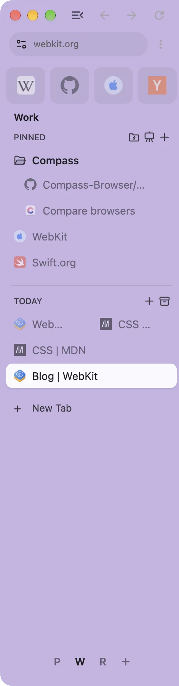
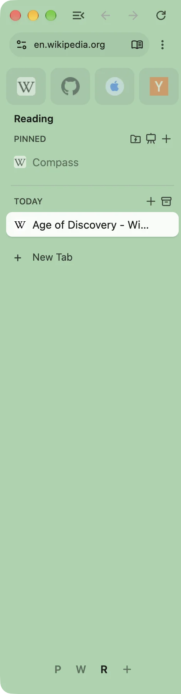
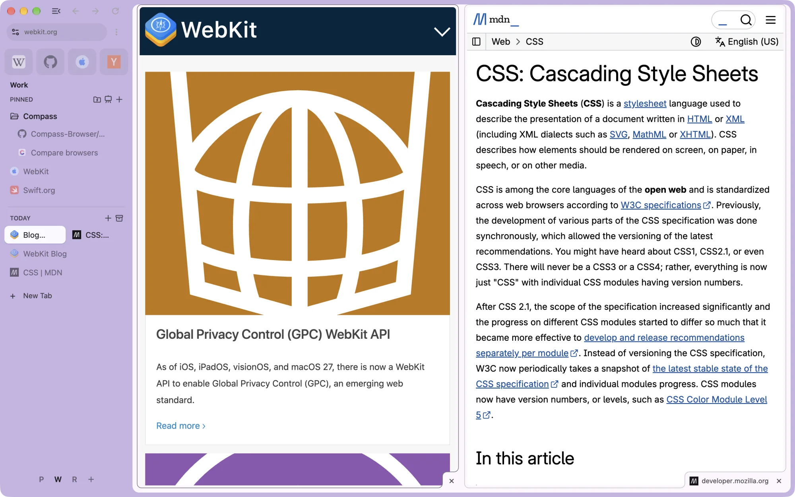
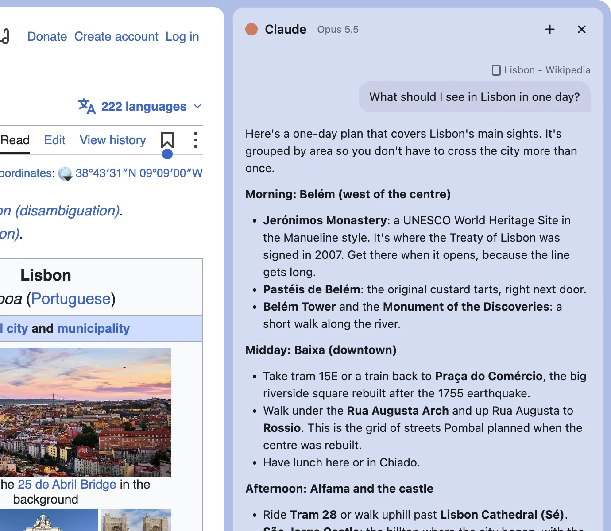
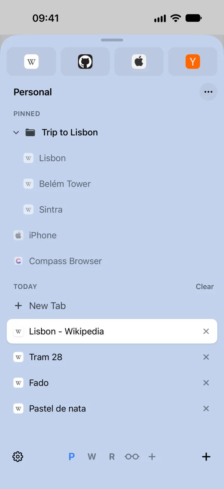
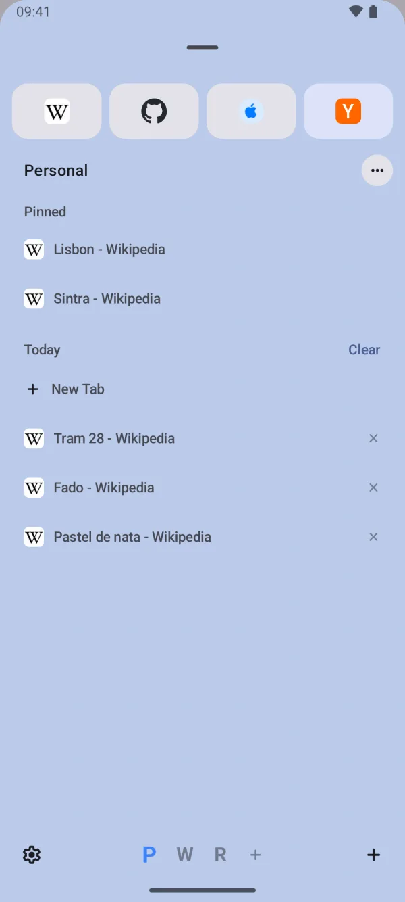

macOS
macOS 13 Ventura or later.
Install with Homebrew
brew install --cask compass-browser/tap/compass
The newest (canary) build. It updates itself.
An open-source Arc alternative built on Chromium: a sidebar of spaces, pinned tabs and folders, and sync that never needs an account.
Free and open source



Moving in? Import your spaces, pinned tabs and profiles in one step.
Compare browsers →Separate sets of tabs for work, home and everything else, each with its own colors, in a sidebar.



Keep them pinned, nested in folders, and come back to them as you left them.
Put two tabs side by side. The pair stays together in the sidebar, as one entry.

Search, jump to an open tab, run a command or ask a question, from the same place.
A side panel that reads the page with you. It also names your folders, shortens tab titles and tidies Today.

The same spaces, tabs, history and passwords as on your computer, end-to-end encrypted. Pair a device with a 6-digit code. No account needed.
Exchanged through SPAKE2. The code never reaches the server.


Everything is encrypted on your devices before it's uploaded. The server sees data types, sizes, times and the device list, but never the content.
A random 128-bit seed, shared by your devices, gives each one an Ed25519 key for the server.
Chromium's sync encryption, with a passphrase from the seed, applied before anything is uploaded.
Devices pair with a 6-digit code that never reaches the server.
A BIP39 phrase brings everything back on a new device.
The sync server is open source too. Host it yourself, or set up a free one on Cloudflare.
Free, open source and updated automatically.
macOS 13 Ventura or later.
brew install --cask compass-browser/tap/compass
The newest (canary) build. It updates itself.
Windows 10 or 11, 64-bit.
64-bit (x64). The Flatpak updates itself with flatpak update or your software center; the tarball doesn't.
flatpak install --user https://raw.githubusercontent.com/Compass-Browser/Compass/flatpak/compass-stable.flatpakref
Through Apple's TestFlight app.
Phones and tablets (64-bit ARM), through Google Play's testing program.
Compass is a personal project, built mostly with AI coding tools, with me directing and reviewing the work. I share it in case it's useful to you too, but it comes with no guarantee: it may have bugs, break after an update, or stop being maintained. Use it at your own risk.